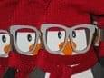

Scarves For Penguins

Welcome
Thank you for taking time to to visit us and see what noble endeavor we are trying to accomplish. Millions of penguins live in the cold and unforgiving Antarctic with little to no shelter and not a Burlington Coat Factory in sight.
Donate Now
And Keep A Penguin Warm
"I don't know why but when I look down at their little faces, it makes me wanna puke! In a good way!" - B.B. Rodríguez

Have you ever seen advertisements with a penguin wearing a scarf? And then thought to yourself, "Shouldn't all penguins have scarves?". And with that small thought, this small site was born.
Myth: Peguins can only live in cold climates
The tuxedos they wear have very little insulation
Some penguins are jackasses
Please Help
Donate Now
Disclaimer: Donated money does not actually go to giving any type of clothing to penguins